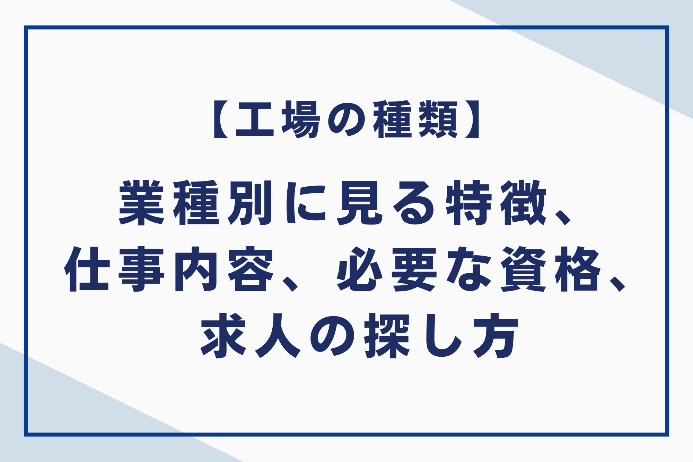
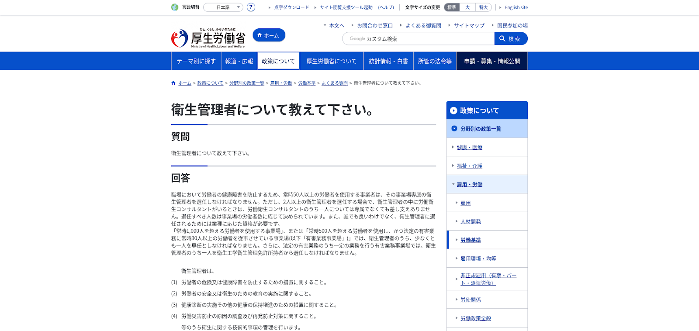

工場で働きたいけれど、どんな種類があるのか自分に合う職場はどこか疑問が出てきます。本記事では、業種（機械、金属、電子部品、自動車、化学、食品など）や規模（大規模、中規模、小規模）、BtoB・BtoCといった分類、さらに仕事内容の例や必要な資格、求人の探し方まで、工場のすべてを網羅的に解説します。

工場の種類を知る重要性
自分に合った工場を見つけるためには、まず工場の種類についてある程度の知識を持つことが重要です。工場の種類を理解すると、自分がどのような仕事に興味があるのか、どのようなスキルを身につけるべきなのか、どのような資格が必要なのかを具体的に考えられます。
また、自分がどのような働き方をしたいのか、どのような労働環境で働きたいのかを考える上でも、工場の種類に関する知識は役立ちます。様々な種類の工場の特徴を理解し、自分にぴったりの工場を見つけてください。

工場の種類を理解するための基礎知識
工場には様々な種類があり、それぞれの工場の特徴や役割を把握する上で重要です。ここでは、工場を分類する上での基礎知識として、業種と業態の違い、工場規模による分類、BtoB工場とBtoC工場の違いについて解説します。
業種と業態の違い
「業種」とは、企業がどのような商品やサービスを扱っているか、つまり事業の内容で分類したものです。例えば、食品を製造している会社は「製造業」、小売店を経営している会社は「卸売・小売業」といった具合です。
ー方「業態」とは、同じ業種であっても、企業がどのような方法で事業を展開しているかで分類したものです。同じ「卸売・小売業」でも、百貨店、スーパーマーケット、コンビニエンスストア、インターネット通販など、様々な販売方法があります。
工場規模による分類
工場の規模は、従業員数や資本金、生産高など様々な基準で分類されます。
| 工場規模 | 従業員数 | 工場の特徴 |
| 大規模工場 | 数百人以上 | 設備が整っており、大量生産に特化している |
| 中規模工場 | 数十人～数百人 | 特定の製品や工程に特化している場合が多い |
| 小規模工場 | 数人～数十人 | 小ロット生産やニッチな製品に特化 |
このように、従業員規模を基準に工場を分類できます。
BtoB工場とBtoC工場の違い
BtoB工場とBtoC工場は、その取引先の違いによって特徴が大きく異なります。BtoB工場は企業を相手に製品や部品などを提供し、BtoC工場は一般消費者を対象に完成品を販売します。
取引先の違いによるそれぞれの工場の特徴を、下記の表にまとめました。
| 特徴 | BtoB工場 | BtoC工場 |
| 取引先 | 企業 | 一般消費者 |
| 製品 | 部品、素材、中間製品など | 完成品 |
| 納期 | 比較的長い | 比較的短い |
| 品質 | 高い信頼性と耐久性が求められる | ある一定水準の品質が求められる |
| 価格 | 大量生産によるコスト削減 | ブランド力や付加価値 |
| 受注量 | 大量受注 | 少量多品種 |
| 営業活動 | 長期的な関係構築 | 広告宣伝や販売促進 |
このように、BtoB工場とBtoC工場は、取引先の特性に合わせた生産体制や営業戦略を取っています。
業種別に見る工場の種類と特徴
工場は、製造する製品によってその種類や特徴が大きく異なります。ここでは、代表的な業種を例に、工場の特徴を解説します。
加工組立型工場（機械、金属、電子部品、自動車など）
加工組立型工場とは、文字通り、部品の加工や組み立てを行う工場です。代表的な業種として、機械、金属、電子部品、自動車などが挙げられます。
製品例
製品例を通して、各工場の具体的なイメージを掴んでいきましょう。
| 工場の種類 | 製品例 |
| 機械 | 自動車、家電、産業用機械、農機具、建設用機械、ユニット、部品など |
| 金属・鉄鋼 | 鉄、銅、鉛、亜鉛、アルミニウム、レアメタルなど |
| 電子部品・電子デバイス | 半導体、集積回路、液晶パネル、コネクタ、スマートフォン、コンピュータなど |
| 化学 | フィルム、ビニール、プラスチック、洋服の繊維など |
| 食品 | パン、お菓子、レトルト食品、冷凍食品、カット野菜、総菜、ジュースなど |
| 建築・住宅 | プレハブ、ユニット工法のパーツ、建築資材など |
| 医薬品 | 医薬品全般 |
| その他 | タイヤ、紙、日用品など多数 |
このように工場の種類によって、製造される製品は大きく異なります。
仕事内容の例
加工組立型工場では、機械や金属、電子部品、自動車などの製造が行われており、さまざまな仕事があります。例えば、機械を操作する「加工・機械オペレーター」、部品を組み立てる「組立て・組付け作業」、製品の仕上がりを確認する「検査作業」です。
さらに、塗装、溶接、旋盤、研磨作業といった専門的な作業もあります。未経験でも始められる仕事が多く、資格を取ればより専門的な仕事に就く可能性もあるでしょう。
プロセス型工場（化学、石油化学、製薬、食品など）
プロセス型工場とは、主に原材料に流体を用いる工場です。化学、石油化学、製薬、食品などの工場が該当します。これらの工場では、一度生産工程が始まると途中で止めるのは難しく、連続的な生産を行います。製品の例としては、化学薬品、ガソリン、医薬品、飲料などが挙げられます。
製品例
プロセス型工場は、化学反応や連続的な工程を経て製品を製造します。ここでは代表的な業種である化学、石油化学、製薬、食品のそれぞれの製品例を挙げてご説明します。
| 業種 | 製品例 |
| 化学 | フィルム、ビニール、プラスチックなど |
| 石油化学 | エチレン、プロピレン、ポリエチレンなど |
| 製薬 | 医薬品全般（錠剤、カプセル、注射剤など） |
| 食品 | 冷凍食品、総菜、ジュース、パン、お菓子など |
生活に必要な製品が多いです。
仕事内容の例
プロセス型工場では、化学反応や精製、配合などを通じて製品が作られています。そこで働く人には、オペレーター、技術者、研究開発者などさまざまな職種があります。
オペレーターは機械を動かしたり、原料を入れたり、品質をチェックする仕事です。技術者は設備の点検やトラブル対応、製造工程の改善を担当します。
研究開発者は新しい製品を作ったり、よりよい製造方法を考えたりする仕事です。化学工場では、技術者が設備を管理し、研究者が新しい技術を開発します。皆がそれぞれの役割を活かして働く工場です。
その他の工場（印刷・製紙、建築・住宅、物流倉庫など）
身の回りの製品で意外と気づかないうちに利用しているものも多く作られているのが、この「その他の工場」です。ここでは、印刷・製紙、建築・住宅、物流倉庫の3つの工場について解説します。
製品例
工場の種類によって製造される製品は大きく異なるため、代表的な例を挙げて見ていきましょう。
| 工場の種類 | 製品例 |
| その他の工場（印刷・製紙） | 書籍、新聞、段ボールなど |
| その他の工場（建築・住宅） | プレハブ住宅、建築資材など |
| その他の工場（物流倉庫） | 商品の保管、流通処理など |
工場の種類によって製造される製品は大きく異なります。
仕事内容の例
その他の工場には、印刷・製紙、建築・住宅、物流倉庫などがあり、それぞれ異なる仕事があります。印刷・製紙工場では、印刷オペレーターが印刷機を操作し、製本や梱包作業も行います。
建築・住宅工場では、大工や左官が建物を作り、内装仕上げや電気・設備工事も担当します。物流倉庫では、ピッキング作業で商品を取り出し、仕分けや梱包、フォークリフト運転などが行われます。
関連記事：工場勤務「楽すぎ」は本当？未経験者が知っておくべきリアルな実態！ – 株式会社ベルジャパン
工場における仕事内容と求められる4つのスキル
工場には様々な仕事があり、それぞれ求められるスキルも異なります。代表的な仕事内容をいくつかご紹介します。
1.製造・生産に関わる仕事
工場の製造・生産部門には、さまざまな仕事があります。加工・機械オペレーターは、機械を操作して部品や材料を加工する仕事で、正確な操作技術が求められます。
組立・組付作業は、加工された部品を組み合わせて製品を完成させる仕事で、スピードと正確さが重要です。塗装作業では、製品に塗料や保護材を塗り、外観や耐久性を向上させます。
さらに、溶接作業や旋盤作業、研磨作業などの専門的な仕事もあります。工場の仕事には、それぞれ必要なスキルがあり、習得すると活躍の場が広がります。
2.品質管理・検査に関わる仕事
工場における品質管理とは、顧客に満足してもらえる製品を提供するために、製造工程全体で品質を管理する取り組みです。製品の品質基準を満たしているかを確認する「品質検証」と、不良品発生時の原因究明と再発防止策を立案する「品質改善」が主な仕事内容です。
工程管理では、作業手順の標準化や作業者の教育、設備管理を行い、品質を安定させます。品質検証では、完成品の検査や製造工程の監視を行い、不良品の出荷を防ぎます。
3.設備保全に関わる仕事
工場の生産設備を正常に保つのが設備保全の仕事です。主に「トラブル対応」と「維持管理」の2つに分かれます。
トラブル対応（事後保全）は、設備の故障時に迅速に修理し、生産ラインの停止を最小限に抑える仕事です。不具合の特定や部品交換、メーカーへの問い合わせなどを行います。
維持管理（予防保全・予知保全）は、トラブルを未然に防ぐために定期点検や設備の状態監視を行い、故障の兆候を早期に発見して対処します。どちらも生産の安定稼働に欠かせない重要な仕事です。
4.研究開発に関わる仕事
研究開発は、企業の成長を支える重要な仕事です。市場のニーズや将来の動向を予測し、新しい製品や技術を生み出すために、日々研究や実験に取り組みます。研究開発の仕事は、常に新しい知識や技術を学ぶ必要があるため、探究心や学習意欲が求められます。
また、実験や分析を繰り返す忍耐力も必要です。研究開発の仕事は、企業の未来を担う重要な仕事と言えるでしょう。
工場勤務に必要な資格
工場で働く際に有利な資格は、仕事内容によって様々です。資格を取得すると、仕事の幅を広げたり、キャリアアップを目指したりすることが可能です。ここでは、工場勤務で役立つ代表的な資格をいくつかご紹介します。
国家資格

工場勤務で役立つ国家資格は数多く存在します。資格を取得すると、専門性を高め、キャリアアップに繋げるだけでなく、資格手当による収入アップも見込めます。
ここでは、工場勤務で特に役立つ国家資格をいくつかご紹介します。
| 資格名 | 概要 | 活かせる業種 | |
| 衛生管理者 | 労働者の健康管理や安全衛生の確保を担う。 | 全業種（第一種）、一部業種（第二種） | |
| エネルギー管理士 | 工場におけるエネルギー使用量の監視や改善を行う。 | エネルギー消費量の多い工場（自動車、電子機器、食品など） | |
| 自動車整備士 | 自動車の点検・整備を行う。 | 自動車ディーラー、整備工場、中古車販売メーカーなど | |
| ボイラー技士 | ボイラーの運転・保守点検を行う。 | 工場、ビル、病院などボイラー設備のある施設 | |
| 電気工事士 | 電気設備の工事・保守を行う。 | 建設業、製造業など |
これらの資格は、工場の規模や業種によって必要とされるものが異なります。自身のキャリアプランや職場環境に合わせて、適切な資格の選択をしてください。
資格取得に向けて、しっかりと計画を立て、学習を進めていきましょう。
民間資格
民間資格は、各業界団体や企業が独自に設けている資格です。業務に関する専門知識や技能の習得度合いを評価するもので、国家資格と比べると種類が豊富なのが特徴です。工場勤務で役立つ代表的な民間資格には、以下のようなものがあります。
| 資格名 | 概要 |
| フォークリフト運転技能講習 | 荷物を運搬するフォークリフトを運転するために必要な資格です。倉庫や工場などでフォークリフトを使う際には、この資格が必須となります。 |
| 玉掛け技能講習 | クレーンで荷物を吊り上げる際に、安全に作業を行うための資格です。工場内での重量物の運搬作業などで必要とされます。 |
| 床上操作式クレーン運転技能講習 | 工場や倉庫などで使用されるクレーンを運転するための資格です。 |
| 危険物取扱者 | 危険物の製造、貯蔵、取扱などを行う際に必要となる資格です。工場によっては必須の資格となる場合があります。 |
その他にも、技能検定や、特定の機械操作に関する資格など、様々な民間資格が存在します。
参考：講習案内 | 陸上貨物運送事業労働災害防止協会 岡山県支部
資格取得のメリット
資格を取得すると、転職や収入アップ、スキル向上など多くのメリットがあります。資格はスキルの証明となり、履歴書に記載すると採用担当者へのアピールになるでしょう。
特に専門性の高い資格は転職を有利にし、応募条件になっている場合もあります。また、資格手当が支給されたり、昇給や昇進のチャンスが広がれば収入アップにつながるケースもあります。
さらに、資格取得の勉強を通じて専門知識や技能を身につけ、業務の質を向上させることが可能です。資格は努力の証となり、自信にもつながるため、自分に合った資格を見つけて挑戦してみましょう。
工場求人の探し方は4つ
自分に合った工場の仕事を見つけるためには、様々な求人経路を効果的に活用します。それぞれの方法の特徴を理解し、自分に合った探し方を見つけましょう。
1.求人サイトの活用
工場や製造業に特化した専門サイトから探すのがおすすめです。これらのサイトは、ものづくりに関わる求人が豊富で、工場特有の絞り込み機能（職種、資格、寮の有無など）が充実しているため、希望の求人を効率的に見つけられます。
専門サイトで希望の求人が見つからない場合は、総合求人サイトも視野に入れましょう。
2.ハローワークの活用
ハローワークは、求職者支援を行う国の機関です。仕事探しはもちろん、履歴書の書き方や面接対策など、親身なアドバイスを受けられます。厚生労働省が運営しており、全国各地に設置されているため、誰でも気軽に利用できます。特筆すべきは無料で利用できるという点です。費用を気にせず、積極的に活用しましょう。
3.企業のウェブサイト
近年、企業の採用活動において自社ウェブサイトが重要な役割を果たしています。特に、製造業ではそれぞれの企業の強みや社風を伝えるために、ウェブサイトを積極的に活用する傾向が見られます。
求人サイトなどに掲載されていない独自の募集情報や、会社の雰囲気を伝える動画、社員インタビューなどを掲載して企業の魅力を効果的に伝えられます。
4.エージェントの活用
人材紹介会社（エージェント）は、求職者と企業の仲介役を果たします。工場勤務の求人を専門に扱うエージェントも存在し、自分に合った仕事を見つけるためのサポートを受けられます。
希望する条件を伝えれば、条件に合った求人を紹介してもらえる場合もあります。また、履歴書の添削や面接対策などのサポートも受けられるため、初めての転職活動でも安心して進められます。
特に、未経験者や経験の浅い方は、エージェントを活用すると、自分に合った工場の仕事を見つけやすくなります。
工場の種類でよくある質問3つ
工場の種類についてよくある質問と回答をまとめました。
質問1.工場の種類によって、仕事内容や求められるスキルはどのように違いますか？
工場の種類によって、仕事内容や求められるスキルは大きく異なります。例えば、自動車工場の組立ラインでは、決められた手順に従って正確に作業を進める能力や、チームワークが求められます。一方、化学工場では、化学物質の知識や安全管理の意識、精密機械を操作する技術などが求められるでしょう。
質問2.将来性のある工場の種類は？
将来性のある工場の種類は、時代の変化や技術革新に合わせて変化していくため、一概に断定することはできません。しかし、近年では、AIやIoT、ロボット技術などの先端技術を導入したスマートファクトリー化が進んでおり、これらの技術に関連する工場は高い将来性が期待されます。
質問3.同じ業種でも、工場の規模によってどのような違いがありますか？
同じ業種でも、工場の規模によって仕事内容や労働環境などに違いがあります。大規模工場では、大量生産体制が整っており、分業化が進んでいるため、特定の工程に特化した専門的なスキルを身につけることができます。
また、福利厚生や研修制度が充実している場合が多いです。一方、中小規模工場では、幅広い業務に携わる機会があり、多様なスキルを身につけることができます。また、経営層との距離が近く、風通しの良い職場環境であることが多いです。
まとめ
この記事では、工場の種類を理解する重要性を説き、業種や規模、取引先など様々な観点から工場を分類し、それぞれの特徴を解説しています。 工場勤務に必要な資格や求人の探し方についても触れ、就職活動に役立つ実践的な情報を提供しているので、自分に合った工場を見つけるための第一歩として活用してください。
なお、株式会社ベルジャパンは、有料職業紹介業のなかでも豊富な実績ときめ細やかなサポート体制を強みとしており、求職者・企業双方から高い評価をいただいております。独自のネットワークを活かして非公開求人を含む多様な案件をご紹介できる点が大きな特長です。
さらに、専任コンサルタントがキャリアやスキル、ライフスタイルなどを詳しくヒアリングすることで、一人ひとりに最適化されたサポートを実現しています。⇛ベルジャパンに相談する